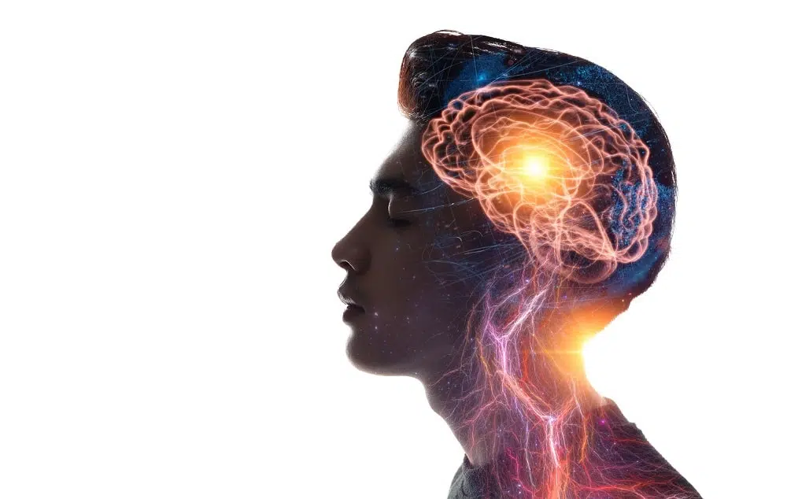
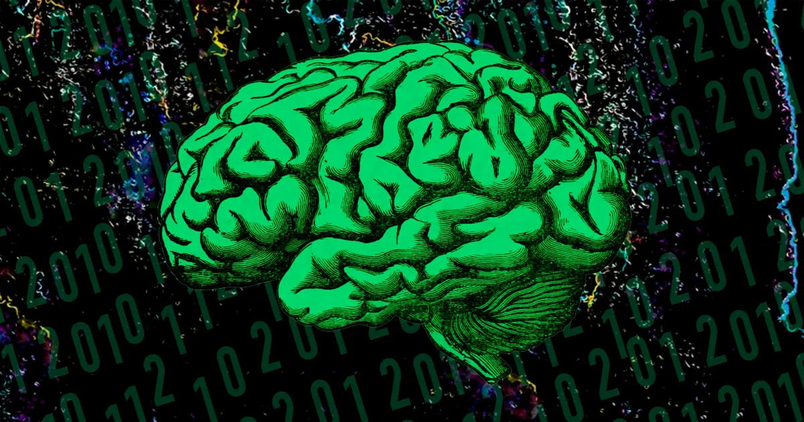

Sobre o cérebro
O cérebro recebe informações dos olhos, ouvidos, nariz e de outros órgãos dos sentidos. Ela processa informações e gera pensamentos e ideias, além de enviar mensagens para o corpo. Por exemplo, ele diz aos músculos como se mover para que possamos caminhar, falar e fazer as coisas que queremos que o corpo faça. O cérebro também controla muitas coisas que o corpo faz sem pensarmos sobre isso. Por exemplo, o cérebro ajusta automaticamente a respiração, a frequência cardíaca e a pressão arterial.
"O cérebro é uma porção do sistema nervoso central que está contida no interior da caixa craniana. Faz parte do encéfalo, sendo responsável por representar cerca de 80% da massa dessa porção do SNC. É considerado o centro da inteligência e aprendizagem do nosso organismo e se desenvolve a partir do telencéfalo.
O órgão pode ser dividido em duas partes, o hemisfério cerebral esquerdo e o direito, que estão conectados pelo corpo caloso. Podemos dividir os hemisférios cerebrais em quatro lobos, que recebem o nome de acordo com o osso do crânio situado acima dele. Assim, temos o lobo frontal, lobo temporal, lobo parietal e lobo occipital."

Você já se perguntou para que serve a sua cabeça?

Não é bem para enfeitar o pescoço que ela está aqui. A cabeça guarda a parte mais sofisticada do nosso corpo: O cérebro, o órgão mais importante do sistema nervoso que controla o corpo todo. Ele é responsável pelas ações voluntárias e involuntárias do nosso corpo.
As ações voluntárias são aquelas que nos permite ter vontade própria, como comer, falar, brincar, mexer o dedão do pé e muitas outras. Já as ações involuntárias são aquelas que fazemos sem perceber, como bater o coração, respirar, aquelas que o corpo faz mesmo quando você está dormindo.
As células nervosas ou neurônios processam todas as informações fazendo com que o cérebro execute todas as suas tarefas. É como se o cérebro fosse uma empresa, e essas células, as operárias.
Ao contrário da maioria das células do nosso corpo, que morrem e logo são substituídas por outras, os neurônios não se regeneram, ou seja, quando eles morrem não aparece ninguém para ficar no seu lugar.

“O homem não pode sobreviver, exceto através de sua mente. Ele vem à Terra desarmado. Seu cérebro é sua única arma.” Ayn Rand
“O homem não pode sobreviver, exceto através de sua mente. Ele vem à Terra desarmado. Seu cérebro é sua única arma.” Ayn Rand
“O homem não pode sobreviver, exceto através de sua mente. Ele vem à Terra desarmado. Seu cérebro é sua única arma.” Ayn Rand
“O homem não pode sobreviver, exceto através de sua mente. Ele vem à Terra desarmado. Seu cérebro é sua única arma.” Ayn Rand